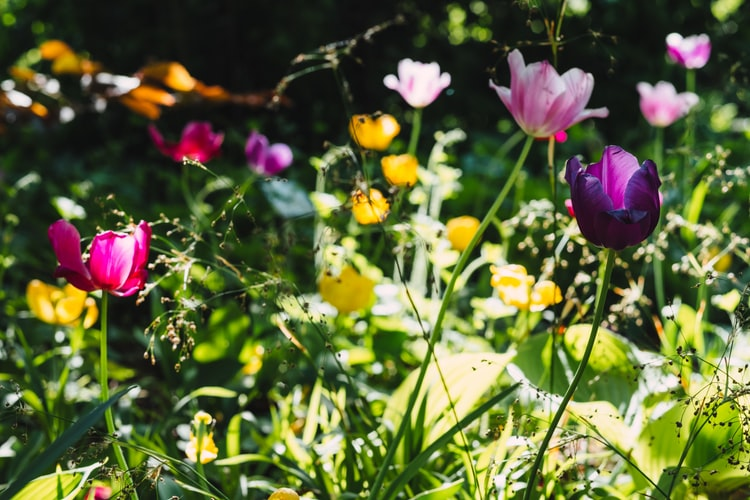
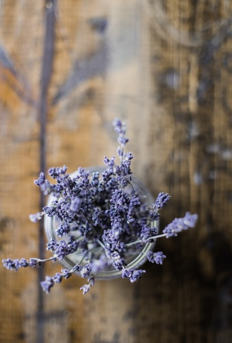

Les Fleurs
C'est quoi une fleur en ville ?

En intérieur comme en exterieur, colorée, odorantes, pour faire jolie ou comme fonction médicinale,
les fleurs sont de meilleures compagnies qu'un poison rouge.
Que de vertues a explorer que votre vie de citadin ne vous empèche en aucun cas d'étudier de plus près !
Vous ne serez jamais déçus par ces belles des champs.
Leur floraison simple et généreuse anime à peu de frais n’importe
quel petit jardin de ville. Qu’il s’agisse de créer rapidement un jardin foisonnant ou d’insuffler des touches
naturelles, elles savent s’adapter!
Astuces !

La lavande. Son parfum éloigne les moustiques et repousse les mites,
tandis qu'il attire les abeilles, les bourdons et les papillons.
Par ailleurs, la lavande a des vertus apaisantes.
Si l'odeur du tagète, une jolie fleur jaune, indispose les moustiques,
elle fait en revanche le bonheur des escargots.
Pas sûr que vous gagniez au change cependant...
dans leurs feuilles des glandes remplies d'huiles essentielles qui exhalent
un parfum pas du tout au goût des moustiques.
Même les guêpes gardent leur distance.
Et en plus d'enchanter nos narines avec leur parfum suave,
ces fleurs régaleront vos yeux de leurs belles couleurs.
Il serait dommage de s'en priver!
Anecdotes ?
Fleurs et couleurs : quelle signification ?
Non pas les couleurs des roses, qui sont spécifiques elles aussi, mais plus connues.
Nous parlons bien ici de fleurs en générale.
Rouge : la passion, Blanc : la pureté, Vert : le naturel,
Jaune : l’énergie, Rose : la tendresse, Orange : la joie de vivre, Bleu : la poésie
Alors qu'elle sera ta prochaine bouture ?